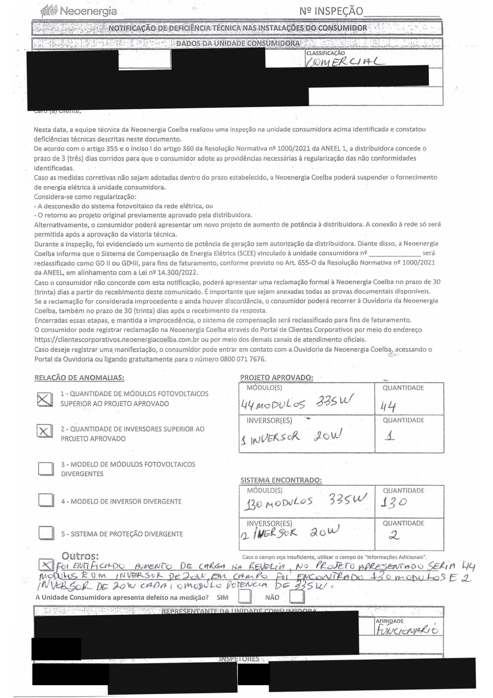

Dono da usina
A autuação é sua, o valor é seu e o prazo é seu.
Você ampliou para gerar mais e economizar. Agora precisa saber quanto desse valor é realmente devido, e o que fazer para a usina voltar a operar sem risco.
Para dono de usina · Para integrador
Ampliou a usina e a distribuidora autuou? Helane Souza abre o seu documento com você, linha a linha, e aponta onde o cálculo não se sustenta. Sem custo, contratando ou não.
3 perguntas, nome e WhatsApp · menos de 1 minuto
Existe uma janela para contestar, e ela não é longa.
Um mesmo TOI. Duas posições.
Dono da usina
Você ampliou para gerar mais e economizar. Agora precisa saber quanto desse valor é realmente devido, e o que fazer para a usina voltar a operar sem risco.
Integrador
Precisa de leitura técnica para saber de quem é a responsabilidade, o que dá para contestar e como responder ao cliente com respaldo, em vez de pagar do próprio bolso.
O primeiro ponto a conferir
Cada autuação traz o seu. Ele varia conforme a distribuidora, o tipo de irregularidade e a data em que você foi notificado.
Perder esse prazo consolida o valor e transforma uma discussão administrativa, que é rápida e barata, numa disputa judicial, que não é nenhuma das duas.
Se você ainda não abriu o documento para procurar essa data, é por aí que a conversa começa.
O valor parece definitivo porque veio impresso, com timbre e número de protocolo. Não é. É o resultado de um cálculo que alguém fez.
Desligar o que foi ampliado não apaga o período já autuado, não encerra o passivo e não regulariza a usina. Você perde a geração e continua com o problema.
Nos dois casos, o prazo continua correndo enquanto você decide.
ANEEL · Resolução Normativa nº 1.000/2021
Alterar a capacidade de geração sem novo parecer de acesso é infração. Isso é verdade e não adianta contornar.
O que a maioria não sabe é o que vem depois: na prática, os TOIs chegam com frequência com erros técnicos e cobranças abusivas.
O método

Até quando a distribuidora voltou no tempo para cobrar, e se essa data se sustenta diante do parecer de acesso, da data real da ampliação e do histórico de consumo.
Qual critério foi usado para transformar potência em reais, e se esse critério é o previsto para o tipo de irregularidade apontada.
Se a potência que entrou na conta é a efetivamente instalada, ou um número inflado por arredondamento, por soma indevida ou por leitura equivocada do inversor.
Se o dispositivo invocado corresponde ao que de fato aconteceu, ou se a distribuidora enquadrou num artigo mais gravoso do que o caso comporta.
Nenhum valor está conferido enquanto alguém não abre o documento e faz essas perguntas.
Quero a leitura do meu TOIPré-visualização do layout. Nenhum depoimento abaixo é real, e este modo não aparece na página publicada.
Quem já conhece o trabalho
Cada caso é único. Resultados anteriores não garantem o mesmo resultado no seu.
Por que tanta gente competente trava aqui
Módulo, inversor, potência, cabeamento. Terreno conhecido, e você resolvia.
Prazo, dispositivo, base de cálculo e peça de contestação. Regulatório não se resolve com chave de fenda.
Não é falta de capacidade técnica. É que o jogo passou a ser outro, com regras que ninguém explicou.
Como o trabalho acontece
O documento é lido linha a linha: o que a distribuidora afirmou, com que base calculou, qual período considerou e onde isso não se sustenta.
Contestação administrativa, com fundamento técnico e regulatório, para questionar cobranças indevidas e buscar a redução do valor autuado.
O caminho para a usina operar dentro das regras, porque contestar a multa sem regularizar resolve o passado e deixa o futuro em aberto.
Quem vai ler o seu TOI
“Quando você é a primeira, ninguém te explica as regras: você descobre sozinha, e geralmente descobre errado, na conta. Aprendi a ler regulação como quem lê contrato.
Anos depois, comecei a receber ligações sempre com a mesma cena: um TOI em cima da mesa, um valor alto, um prazo curto e ninguém sabendo por onde começar. Quase ninguém abria o documento para conferir o cálculo.
O que eu aprendi apanhando era exatamente o que faltava no mercado. Hoje cuido do lado que ninguém quer olhar: o regulatório, o técnico, o jurídico.”
Você não está falando com alguém que ouviu falar da Resolução 1.000. Está falando com quem discute essas regras onde elas são escritas, do lado de quem gera.
Quero a leitura do meu TOISem letra miúda
Ser explícito aqui economiza o seu tempo e o nosso.
Não. O formulário e a leitura são sem custo e sem compromisso. Você sai da conversa sabendo o tamanho real do problema, contratando ou não.
Não para preencher o formulário. Ele tem opção para quem foi avisado e não recebeu, para quem só viu a conta mudar e para quem não sabe. O documento entra depois, quando a equipe falar com você. Vale procurá-lo desde já, porque é nele que está o seu prazo.
Sim. O formulário é para quem foi autuado por ampliação de usina e também para quem executou a ampliação.
Pode. Se estiver fora do critério técnico, você ouve isso já na primeira conversa, e isso não terá custado nada.
Não. Desligar não apaga o período já autuado, não encerra o passivo e não regulariza a usina. Você perde a geração e continua com o problema.
Não. O trabalho é contestar tecnicamente a autuação e buscar a redução ou o cancelamento do valor cobrado, sem garantia de resultado.
Me manda o seu caso
Helane SouzaEspecialista em regulação de energia